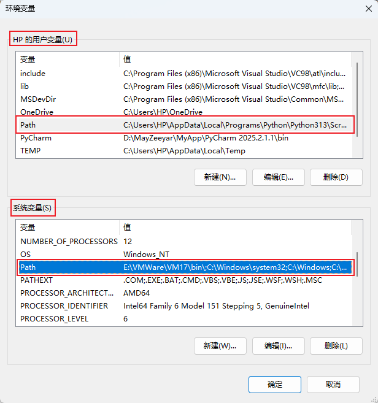
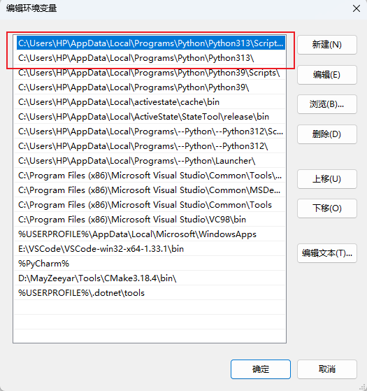
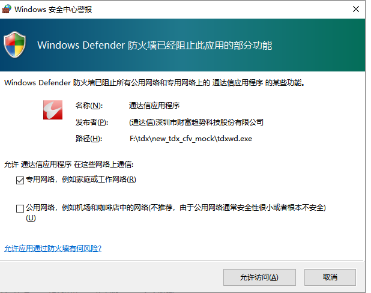
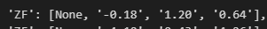

# Q：运行的python文件可不可以随便放，不一定在PYPlugins\user目录下？
A： 可以。在import tqcenter前添加通达信安装目录\PYPlugins\user这个绝对路径。
import sys
sys.path.append('C:/new_tdx64/PYPlugins/user')
from tqcenter import tq
tq.initialize(__file__)
2
3
4
# Q：无法内部执行策略之如何把python路径添加到PATH中
A： 内部执行python策略时，会寻找用户设定的默认python解释器执行python策略，所以必须在操作系统<高级系统设置>--->环境变量设置里，配置python路径。

如图所示，环境变量中分为用户变量和系统变量，都有PATH，在这两个中添加python路径都可生效，但是用户变量的优先级高于系统变量，所以图中仅在用户变量中的PATH中添加python路径。

图中可见，PATH中可以配置多个版本的python，但是最后生效为最上面的，每个版本的python需要配置两个路径。
# Q：出现类似以下的报错怎么办？
FileNotFoundError: Could not find module 'F:\tdx\new_tdx_600\PYPlugins\TPythClient.dll' (or one of its dependencies). Try using the full path with constructor syntax.
A： 这通常是TPythClient.dll缺少依赖库导致的，请检查TPythClient.dll同目录下（../PYPlugins/）是否有tdxrpcx64.dll，通常是杀毒软件误杀此dll导致，需要重装或给予白名单确保tdxrpcx64.dll不会被杀毒软件误杀。
# Q：外部运行的py文件报已经存在运行的，怎么处理？
A： 请在TQ策略管理器找到这个正在运行的已经运行出错的OutSide策略，点删除策略删除它。
# Q：菜单一直显示“正在开启TQ策略..”
A： 是否有以下这个提示？如果有，请允许访问。

# Q：获取的数据count=5，返回的指标值怎么前面的是none？

A： formula_set_res = tq.formula_set_data_info(stock_code=stock,stock_period='1d', count=4,dividend_type=1)这里的count=4 是获取最近4根k线的数据用于计算指标，所以最近4根k的数据
ZF:(C-REF(C,1))/REF(C,1)*100;这个式子的只能计算出 最后4根k的涨幅值。
所以在获取指标值时注意获取k线数目要覆盖到最大参数值，否则计算结果会为空。
# Q：为什么同一个选股公式，用formula_process_mul_xg选股的结果比客户端条件选股中得到的结果少？
A： 请确认formula_process_mul_xg中的count参数是否合理？数据个数要满足公式计算中的数据要求。客户端的条件选股中使用了所有的本地数据。
# Q：如何选出分钟内主力净额排名靠前的股票？
A： 可以用一定时间间隔获取主力净额输出值，然后用这次值减上次值的差额排序筛选全市场找出来。
{ZLJE 自定义指标}
超B:=L2_AMO(0,0)/10000.0;
大B:=L2_AMO(1,0)/10000.0;
中B:=L2_AMO(2,0)/10000.0;
小B:=L2_AMO(3,0)/10000.0;
超S:=L2_AMO(0,1)/10000.0;
大S:=L2_AMO(1,1)/10000.0;
中S:=L2_AMO(2,1)/10000.0;
小S:=L2_AMO(3,1)/10000.0;
主力净额:(超B+大B)-(超S+大S),NODRAW;
实现示例完整代码
import sys
import time
sys.path.append('C:/new_tdx_test2025/PYPlugins/user')
from tqcenter import tq
tq.initialize('0303zlje.py')
# 先获取A股全部股票
all_stocks = tq.get_stock_list(market='5')[:100]
# all_stocks=['300911.SZ', '600635.SH', '000890.SZ', '603155.SH', '301448.SZ', '600010.SH', '600011.SH', '600012.SH', '600013.SH', '600014.SH']
print("正在处理，请等待...")
start_date = '20240601'
end_date = '20240630'
# 开始计时
start_time = time.time()
macd_stocks = []
pre_mul_zb_result = {}
mul_zb_result = {}
curr_val = 0
countjs = 1
pre_val=0
ce_val=0
# 添加最大循环次数限制，防止无限循环
max_iterations = 10 # 设置最大迭代次数
while countjs <= max_iterations:
# 保存之前的值
pre_mul_zb_result = mul_zb_result.copy() # 使用copy()避免引用问题
# 获取新的值
mul_zb_result = tq.formula_process_mul_zb(
formula_name='ZLJE',
formula_arg='',
xsflag=6,
return_count=2,
return_date=True,
stock_list=all_stocks,
stock_period='1d',
count=-1,
start_time=start_date,
end_time=end_date,
dividend_type=1
)
print("当前结果:", mul_zb_result)
print("前一结果:", pre_mul_zb_result)
countjs += 1
# 检查是否有有效的数据
if mul_zb_result and countjs >= 2: # 至少需要两次才能比较
diff_list = []
for key in mul_zb_result:
if key != "ErrorId":
# 安全检查
if (key in mul_zb_result and
'主力净额' in mul_zb_result[key] and
len(mul_zb_result[key]['主力净额']) >= 1 and
key in pre_mul_zb_result and
'主力净额' in pre_mul_zb_result[key] and
len(pre_mul_zb_result[key]['主力净额']) >= 1):
curr_val = mul_zb_result[key]['主力净额'][-1]['Value']
pre_val = pre_mul_zb_result[key]['主力净额'][-1]['Value']
ce_val = float(curr_val) - float(pre_val)
diff_list.append((key, ce_val))
print(f"股票 {key}: 当前值={curr_val}, 前值={pre_val}, 差值={ce_val}")
# 按差值从大到小排序，输出前5名
if diff_list:
diff_list.sort(key=lambda x: x[1], reverse=True)
print("主力净额变化前5名:")
for i, (code, diff) in enumerate(diff_list[:5], 1):
print(f"{i}. {code}: {diff:.2f}")
else:
print("无有效差值数据")
# 等待一段时间再下一次循环
time.sleep(180)
print("处理完成")
2
3
4
5
6
7
8
9
10
11
12
13
14
15
16
17
18
19
20
21
22
23
24
25
26
27
28
29
30
31
32
33
34
35
36
37
38
39
40
41
42
43
44
45
46
47
48
49
50
51
52
53
54
55
56
57
58
59
60
61
62
63
64
65
66
67
68
69
70
71
72
73
74
75
76
77
78
79
80
81
82
83
84
85
86
87